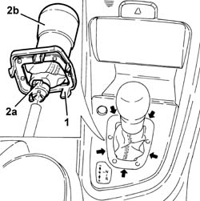

2127A20 cover of control lever/handle for manual gearbox with hydraulic selection - r r
- Path
- Procedures > 21 GEARBOX > 2127 ELECTRO-HYDRAULIC SELECTION. GEARBOX EXTERNAL. CONTROLS > 2127A hydraulic transmission external linkage > 2127A20 cover of control lever/handle for manual gearbox with hydraulic selection - r r
- Kind
- repair procedure (removal / refitting; the operation number is the code)
- Applies to
- all engines; all production periods
- Interactive page
- https://sloeber94.github.io/elrnDB-a156/en/#/3237940
Applies to: all engines; all production periods; only with equipment: Smart gearbox
 Removing
Removing
 Refitting
Refitting1. Release the springs for the trim positioned as illustrated in the diagram and lift the actual trim as much as necessary.
2. Loosen the band (2a) and remove the electro-hydraulic selection manual gear lever/grip trim (2b).

Applies to: all engines; all production periods; only with equipment: Smart gearbox
Refitting
RemovingPlace the electro-hydraulic selection manual gear lever/trim back in its housing and fix it using the band.
Place the trim back in its housing until the fixing springs are attached.
Applies to: engines: 2.0 JTS, 2.0 JTS; all production periods; only with equipment: Smart gearbox
Proceed as described in 7040L37 gear lever plate - r r .
Applies to: engines: 3.2 V6; all production periods; only with equipment: Smart gearbox
Proceed as described in 7040L37 gear lever plate - r r .
Topics linked from this page (1)
Topics that link to this page (4)
- 2127A12 hand lever of manual gearbox with hydraulic selection - r r
- 2127A16 panel of control lever for manual gearbox with hydraulic selection - r r
- 2127A70 support for control levers for manual gearbox with hydraulic selection and handbrake - r r
- 2127E30 auto function selection key of hydraulic gearbox r r